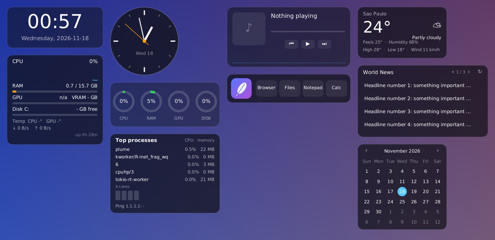
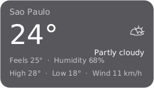
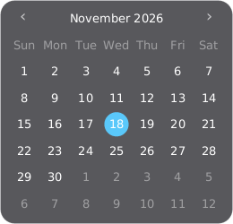
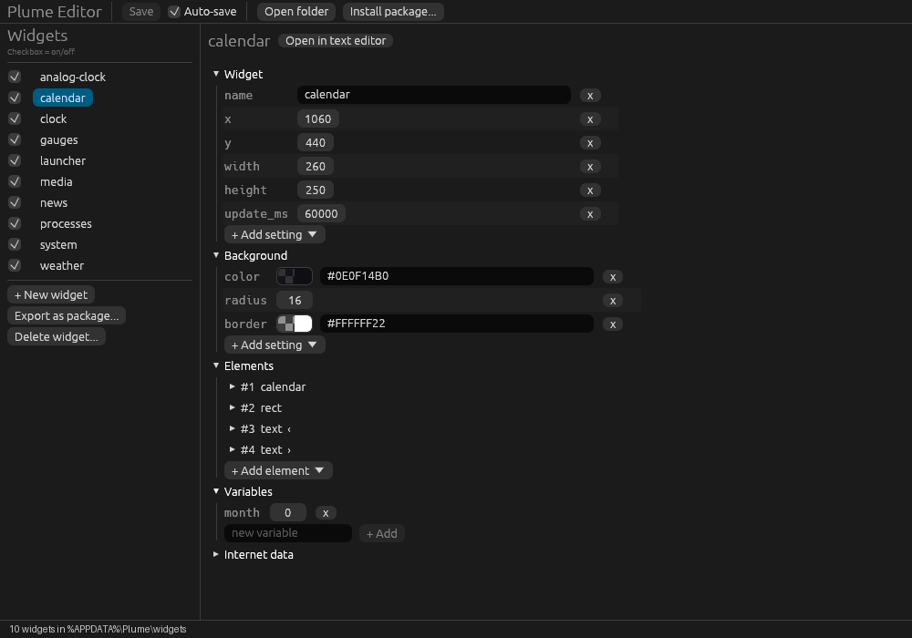

System monitor
CPU (total and per core), RAM, GPU and VRAM, disks, network, battery, top processes, ping and temperatures.
Free · Open source · Windows 10 & 11
Clocks, system monitors, music, weather, news and more on your desktop. Plume is written in Rust and draws each widget in under half a millisecond, so your PC barely notices it.

Plume only measures what your widgets actually show. No GPU widget? The GPU is never queried.
CPU (total and per core), RAM, GPU and VRAM, disks, network, battery, top processes, ping and temperatures.
Title, artist and cover from Spotify, browsers and players, with media buttons and a live audio visualizer.
Read any JSON API or RSS/Atom feed. Downloads use Windows' own networking, nothing extra bundled.
Change colors, texts, sizes and positions in Plume Editor and watch the widget update on your desktop.
Math, conditions and dynamic colors in any field. For the rest, sandboxed LuaJIT scripts.
Follows each monitor's scaling (125%, 150%, 4K), snaps to edges and brings back widgets from unplugged screens.
Open apps, sites and folders, control music and volume, switch pages: on click, right-click or scroll.
Share a widget as a single .plume file. Double-click to install, with a safety check first.
New versions are downloaded, checked against their SHA-256 and installed silently. You can turn it off.
Ten examples come with Plume. Turn them on and off from the tray icon, or use them as a starting point.





Use the visual editor, or write a small text file. Plume reloads a widget the moment you save it.
{cpu > 80 ? 'HOT' : 'ok'} in any text or color# widgets/cpu.toml
name = "cpu"
width = 220
height = 80
[background]
color = "#10121A90"
radius = 14
blur = "acrylic"
[[element]]
type = "text"
x = 16
y = 12
size = 28
text = "CPU {cpu}%"
color = "cpu > 80 ? '#FF453A' : '#FFFFFF'"
Native, no runtime. Talks to Windows directly. No browser engine, no .NET, no Electron.
Draws only what changed. Identical frames are skipped, and hidden widgets cost nothing.
Measures on demand. Sensors, audio and downloads start only when a widget needs them.
One sample for all. System data is read once per second in the background and shared.
Plume is new and not digitally signed yet, so SmartScreen shows a warning (click More info → Run anyway), and some antivirus programs may flag it by mistake with names ending in !ml, which means a machine-learning guess, not a known virus. The full source code is public on GitHub, and every release is built by GitHub Actions from that code.
No. It installs for your user only, in %LOCALAPPDATA%\Programs\Plume, and runs as a normal program.
In %APPDATA%\Plume\widgets (tray menu → Open widgets folder). Updates never touch them, and the uninstaller asks before deleting them.
Not directly: Plume has its own, simpler format. Most skins are easy to rebuild with the editor or a short TOML file.
Many PCs don't report it to Windows. Run LibreHardwareMonitor and Plume reads CPU and GPU temperatures (any brand) from it.
Windows Settings → Apps → Installed apps → Plume → Uninstall.